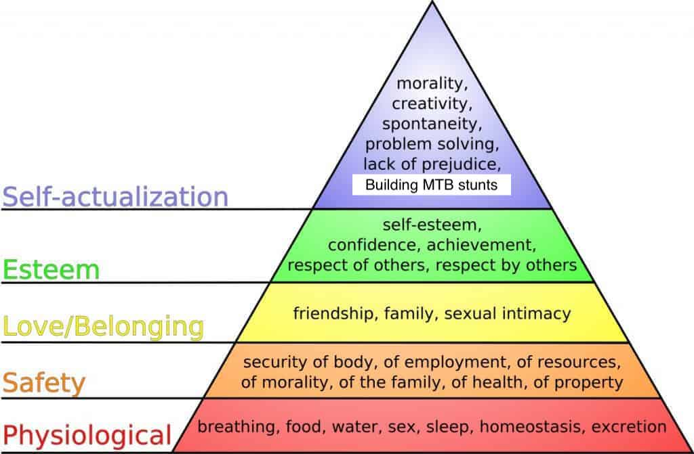

A core tenet of my life philosophy is that creating and developing often, but not always, leads to a fulfilling and satisfying life. Creation is the forming something from nothing. Developing is progression of creations (and in a sense, a creation in and of itself). Both have their places in life.
In Maslow's hierarchy of needs, the pyramid's tip consists of nouns that are primarily subjective to the person, while varying wildly across persons as a whole—this is referred to as self-actualization, or achieving one's full potential. Morality differs between people, where person A thinks X is an egregious offense and B deems to okay; creativity comes in different forms, such as art or writing; spontaneity is present or not-so-present in people; problem solving can be applied across a spectrum of different problems; creating mountain bike features is arguably the only absolute... ("Acceptance of facts" is covered up by my entry.)
Both creation and development often encompass many of the self-actualization components. Some believe it's moral to dispense as much free knowledge as possible. Person A creates a project as open-source for the world to see and develop and model other projects off of. Creativity is required in larger amounts for some projects more than others. Problem solving is needed for all aspects. How to create in general, and then for optimality or efficiency? Where should this project lead, and how to develop it along the way to get it there? Accepting when something can't be built nor created grounds the individual to reality and prevents futile attempts at impossible tasks.
Esteem components are also satisfied through creation and development. Seeing a creation in its full, final form breeds self-esteem and confidence in one's abilities. Others see the effort put in to the project and have no choice but to respect it. The converse is also true: seeing others' work and understanding the magnitude of its difficulty and complexity commands respect.
And just like that, a fair amount of person's needs are satisfied through creating and developing something. (Again, the amount and completeness of satisfaction depends on the project.)
Is creation or development more important? There is equal merit in both, and is greatly dependent on the application. Some (myself) prefer creating certain things (mountain bike features) and leaving them to be—no maintenance, no improvement. It's left there to rot to oblivion or until someone hurts themselves and I feel bad and go fix it. In other areas of life, development is preferred. Developing my training capabilities (strength, aerobic capacity) rather than delving into other disciplines is a personal preference, and not one some would agree with.
But there are also areas where creation and development are paired, neither being more important than the other, a fitting example is this website. All pages are updated as they need to be (development), whether thoughts change on the subject or more information comes to light, while new pages are regularly added (creation). There's no preference, and each is done on an as-needed basis.
There are individuals who exclusively create or exclusively develop. Their abilities may be profound in one area but not the other. They may just plain prefer one over the other. A combination of the two seems more likely. Like any hobby, people prefer and focus on what they're good at, neglecting other skills in the meantime. This creates a cycle where the unpreferred skill stagnates or even regresses, while the preferred progresses, leading to even less and more enjoyment, respectively.
The solution is a balance between the two, skewed towards progression if anything (because progression is often creation). Revisit a creation a week, month, even year after it was "finished" and see how it can be progressed. Regularly schedule reviews for projects. The eyes and mind are clearer after taking a break from looking at something for an extended period.

As previously mentioned, creating and developing allow for freedom of expression, a freedom few take full advantage of. Practically anything can be created, so long as it can be imagined and the resources are available. Anything can be developed, whether branching from the original path that project was on to a more personal one or continuing to drive towards the vision the creator and/or other developers have for it. The point is the choice is up to the individual. There is no right or wrong, good or bad. Beauty is in the eye of the beholder and those who choose to use the project. Freedom is a luxury nowadays. Jobs and managers and markets dictate day-to-day, month-to-month, even year-to-year responsibilities and priorities, leaving little room over long periods to choose enticing projects. Up to 20 hours of the day (eight for sleep, eight for work, two for chores) is spent on non-creative tasks, leaving a measly four hours to pursue personal projects and satisfy the remaining items on the tip of Maslow's pyramid.
This fact points to both a suggestion and a question.
First, those four creative hours can be increased immensely by carefully choosing a career field and company. Many careers encourage employees to create and develop at will, so long as it benefits the company. (Not to get into too much detail, but company reputation towards creation and development should be considered.) If the passion for creation and development is discovered early, those careers and companies can be targeted more easily. Some careers even allow for mid-life crises (e.g., programming via coding bootcamp).
The compensation and benefits the career provides more freedom. Higher compensation allows for a) higher monetary limits to be set on the project, and/or b) the ability to spend more time on projects by retiring earlier or temporarily quitting the job. Some benefits are an indirect form of compensation. Other benefits, like paid time off and paid holidays, directly supply time to focus on projects.
Second, is four hours enough—assuming that's all the time there is—to scratch the creative itch many have burning up inside them? As usual, the answer depends and is entirely subjective. How much effort is being put into those precious hours? Hard efforts can be enough to check the daily to-do box. Motivation to create or develop also waxes and wanes: on some days four hours may be insufficient and others a mere hour will do.